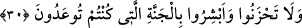

“Rahman arşa istivâ etti” sırrı ortaya çıkar.
Gönül bu râbıtayı buldu ya,
Bundan böyle artık Allah gönle vâsıtasız hükmeder.
Âyet-i kerime şuna işâret etmektedir ki kişi mânevî ve kalbi hastalıktan kurtuluncaya
kadar riyazat ve mücâhede etmelidir. Hastalık devam ettiği sürece nefis sirke ile
yetinmelidir. Hastalık gidince kalp duruma hâkim olur. Artık leziz yemekler, her türlü
tatlılar alınabilir. Bilakis sır ve kalp mâsivâdan temizlenip kurtulunca Rahman
Hazretleri kalbe hükümran olur. Allah sevgisi o kişinin bütün benliğini kuşatır. Artık bu
kişinin her halde tasarruf ve deverânı Allah ile olur. Bu şekilde o kimse tam bir huzur
ve mutluluğu yakalamış olur.
Biz de Allah’tan bu büyük mutluluk ve kurtuluşu istiyoruz!
30. Şüphesiz, Rabbimiz Allah’tır deyip, sonra dosdoğru yolda yürüyenlerin
üzerine melekler iner. Onlara: Korkmayın, üzülmeyin, size vâdolunan cennetle
sevinin! derler.
O’nun Rablığını itiraf, birliğini ikrar ederek “Şüphesiz, Rabbimiz Allah’tır deyip,
sonra dosdoğru yolda yürüyenlerin”; yani, kulluk yolunda kalben ve bedenen ayakları
kaymayan ve başka bir yola sapmayıp: ‘Rabbimiz Allah’tır’ sözlerinde ve bu sözün
gerektirdiği şekilde ikrarlarında sebat edenlerin -ki bütün inanç ve ibâdet konuları
ölene kadar devam etmek üzere bu hükme dâhildir- “üzerine” gönüllerini açıp ilhâm
yoluyla onların hüzün ve korkularını bertaraf etmek üzere dînî ve dünyevî işlerinde
onlara yardım etmek için Allah Teâlâ tarafından “melekler iner. Siz yöneleceğiniz âhiret
işinden orada nâhoş bir durum görmeyeceksiniz. Geride bıraktığınız âile ve
evlâdlarınızdan dolayı da “Onlara: Korkmayın, üzülmeyin,” derler. Zîrâ Allah Teâlâ
sizin namınıza onlara hayırlı halef olup size cennette onlardan daha çok ve daha güzelini
verecektir. Sizinle Müslüman olan âile ve evlâdlarınızı cennette buluşturacaktır. Hüzün,
ya faydalı bir şeyin elden çıkması yahut zararlı bir durumun hâsıl olmasından meydana
gelir. Dünyada peygamberlerin diliyle “size vaadolunan cennetle sevinin! derler.”
Burada (__WORD__) kelimesi zaman ve rütbe olarak sonralık mânâsı ifâde eder. İstikamet,
şümûllü bir nitelik arz etmektedir. Yani sonuç ve istikamet maksûd olduğu için
başlangıçtan ve ikrardan daha üstündür. İnsanın istikamet üzere olması, doğru ölçü ve
prensipleri kabullenip benimsemesidir. Hulefa-i Râşidin’den özellikle Hz. Ömer
(r.a.)’den istikametin îmanda sebat etmek olduğu, Hz. Osman’dan ameli ihlasla yapmak
olduğu, Hz. Ali’den farzları eda etmek olduğu şeklinde rivâyetler vardır. Bunlar,
istikametin teferruât açılımlarıdır.